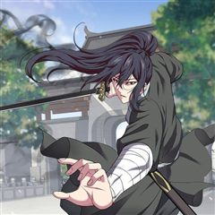
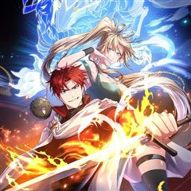

무신귀환록 같은 웹툰 추천

무신귀환록 · 러프 / 묘수
무신귀환록 재밌게 봤다면 이 웹툰들도 좋아할 거예요. 같은 장르이면서 정치, 사이다 같은 요소가 겹치는 작품을, 겹치는 요소가 많은 순서로 20개 골랐어요.
2026-10-11 기준 · 네이버웹툰·카카오웹툰·레진코믹스 · 성인 작품 제외
내 취향으로 직접 골라 추천받기 →-
1
 네이버웹툰
네이버웹툰로열패밀리
대한민국 최대 재벌 '태성'의 장손 강지혁. 태성의 모든 것을 물려받았어야 하지만 누군가의 음모로 인해 부모님을 잃고 고아원에 버려지게 되는데... 20여년의 세월이 흘러 '서지혁'이란 이름으로 태성으로 돌아온 그의 복수가 시작된다.
정치사이다액션네이버웹툰에서 보기 → -
2

-
3카카오웹툰
정검
무림 제일의 승부사이자 최강의 고수를 칭하는 오대천강 중 제일로 꼽히는 담세비. 단순한 초식들로 무림 절대 고수들인 세외제일존인 광시혈객 탁무기와 북해빙궁주인 한령기후 백리단목의 싸움을 멈추게 한 것으로 무림에 이름을 떨친 그였지만 5년 전 갑자기…
정치액션카카오웹툰에서 보기 → -
4
 네이버웹툰
네이버웹툰참교육
무너진 교권을 지키기 위해 교권보호국 소속 나화진의 참교육이 시작된다! <부활남> 채용택 작가 X <신석기녀> 한가람 작가의 신작!
사이다액션네이버웹툰에서 보기 → · 참교육 같은 웹툰 → -
5
 네이버웹툰
네이버웹툰김부장
“제발 안경 쓴 아저씨는 건들지 말자…” 오직 자신의 딸 '민지'를 위해 특수요원직을 관두고 평범함을 선택한 가장 김부장. 그러던 어느 날 민지가 소리소문 없이 사라지고, 김부장은 자신을 감시하는 국가를 적으로 돌리면서까지 딸을 찾아나서기 시작하는데…
사이다액션네이버웹툰에서 보기 → · 김부장 같은 웹툰 → -
6
 카카오웹툰
카카오웹툰비뢰도
홀로 길러주신 아버지를 잃고 10세에 혈혈단신이 된 비류연. 조각가였던 아버지에게 배운 기술로 부모님의 조각상을 만들어 두 분 묘 앞에 세워뒀더니, 지나가던 노인이 그걸 보고는 천하제일 무공을 가르쳐주겠다고 한다. 수상쩍지만 달리 갈 곳도 없고, 그…
사이다액션카카오웹툰에서 보기 → · 비뢰도 같은 웹툰 → -
7
 네이버웹툰
네이버웹툰입학용병
어린 시절 비행기 추락 사고의 유일한 생존자 유이진. 살아남기 위해 용병으로 살아가던 유이진은 10년 후, 가족이 있는 고향으로 돌아왔다.
사이다액션네이버웹툰에서 보기 → · 입학용병 같은 웹툰 → -
8
 카카오웹툰
카카오웹툰무당기협
무림 사파의 수장인 혁련무강은 죽기 직전 불로초를 삼킨 후 눈을 떠보니 무당파 도동의 몸에 빙의되었다. 예전에 본인이 붕괴 직전까지 몰고 갔던 무당파에서 '진무'라는 이름의 도사로 다시 살게 된 그는 무당의 '양의신공'을 전수받기 위해 애쓰다 보니…
사이다액션카카오웹툰에서 보기 → · 무당기협 같은 웹툰 → -
9
 카카오웹툰
카카오웹툰픽 미 업!
그 누구도 던전의 끝까지 오르지 못한 극악의 난이도를 자랑하는 모바일 가챠 게임 <픽 미 업!(Pick me up!)> 마스터 오브 마스터라 불리는 세계 랭킹 5위의 마스터 '로키'는 던전을 깨던 중 정신을 잃게 된다. 깨어나 보니 레벨도 1, 등급…
사이다액션카카오웹툰에서 보기 → · 픽 미 업! 같은 웹툰 → -
10

-
11
 네이버웹툰
네이버웹툰나쁜사람
착한 남자가 좋다는 그녀의 이상형이 되기 위해 10년 동안 노력했다. 그런데! 갑자기 나쁜 남자가 좋다는 그녀... 오늘부터 난... 나쁜 남자로 다시 태어난다.
사이다액션네이버웹툰에서 보기 → · 나쁜사람 같은 웹툰 → -
12
 네이버웹툰
네이버웹툰히어로 킬러
전쟁은 빌런들의 패배로 막을 내렸다. 이제 세상은 부패한 히어로들이 지배하고 있다. 그리고, 그런 히어로들 중 하나가 이화의 언니를 죽였다. 언니를 죽인 게 누구인지는 모르지만 상관없다. 한 놈씩 죽이다 보면 그중에 있을 테니까. 이화는 매일 밤 영…
사이다액션네이버웹툰에서 보기 → · 히어로 킬러 같은 웹툰 → -
13

-
14
 카카오웹툰
카카오웹툰흑백무제
전란의 불이 타오를 때면 그 날이 떠오른다. 나의 가문, 벽산연가가 멸문하던 그 날이... 온몸을 꿰뚫린 아버지 비명횡사한 동생, 지평. 평생을 걸쳐 원수를 찾았지만 알 수 없었다. 누가. 그리고 왜. 살아났다. 그리고 돌아왔다. 벽산연가에. 그 말…
사이다액션카카오웹툰에서 보기 → -
15
 카카오웹툰
카카오웹툰무림에 떨어진 현대인
생존을 위해 아르바이트를 하는 만년 공시생인 나. 한밤중 배달을 하다 과속하던 차에 쓰러졌다. 뺑소니로 요절했던 죽음의 기억이 강렬한데, ‘……내가 조휘?’ 어느 순간 다 쓰러져 가는 조가철방의 차남이 되었다. 날아가는 새를 떨어뜨릴 권세도, 의지를…
사이다액션카카오웹툰에서 보기 → -
16
 네이버웹툰
네이버웹툰왕따가 격투기를 너무 잘함
종합격투기 선수 차무결은 장회장의 꼬임에 넘어가 무체급 격투기를 하던중 식물인간이 된다. 이후 장회장의 이미지 쇄신용으로 이용당하는 차무결. 결국 죽게되는 그는 동명의 고등학생 차무결의 몸에 빙의된다. 내구도 s급의 단단한 몸. 격투기 능력을 업그레…
사이다액션네이버웹툰에서 보기 → -
17

카카오웹툰역대급 창기사의 회귀
무패의 창기사. 기사는 검을 써야만 한다는 고정관념을 철저히 깨부순 공작 가문의 빛나는 별. 제국의 오랜 내전을 일시에 종식시킨 대영웅. 그 이름은 바로 '조슈아 샌더스'. 황제의 역대 최강의 창이라고도 불리는 그가 명성에 어울리지 않는 검붉은 피를…
사이다액션카카오웹툰에서 보기 → -
18
 카카오웹툰
카카오웹툰월령검제
"개 같은 인생이었네… 정말로." 암투가 판치는 마교에서 살아남아 천마의 제자가 됐건만, 결국 사형에게 배신당해 죽음을 맞이한 연소운. 그런데, 눈을 떠보니 마교에 끌려가기 전인 꼬맹이 시절이다?! 지옥 같은 마교의 삶을 반복하기 싫었던 연소운은 새…
사이다액션카카오웹툰에서 보기 → -
19
 카카오웹툰
카카오웹툰천하제일 의뢰문
“드디어 자유다!” 십오 년만의 하산, 지난 세월 동안 헛되이 보낸 청춘을 보상 받기 위해 세상에 나섰다. 하산하며 사부와 약속했던 십행을 하루 빨리 해결한 뒤 한평생 즐기면서 살아가기로 마음 먹고 자신만만하게 첫발을 내디뎠지만 어째 처음 예상과는…
사이다액션카카오웹툰에서 보기 → -
20
 카카오웹툰
카카오웹툰천검기협
무림의 환란을 막기 위해 초절정고수에서 초고도비만으로 타임슬립+빙의한 개망나니 진위강, 아니 유현. 환란의 원흉인 '환란의 주구'를 찾아내 숨통을 끊어 놓아야 하거늘 사랑 듬뿍 받고 자라 걷지도 못할 만큼 육중해진 몸에 빙의한 덕에 제 숨통 유지가…
사이다액션카카오웹툰에서 보기 →